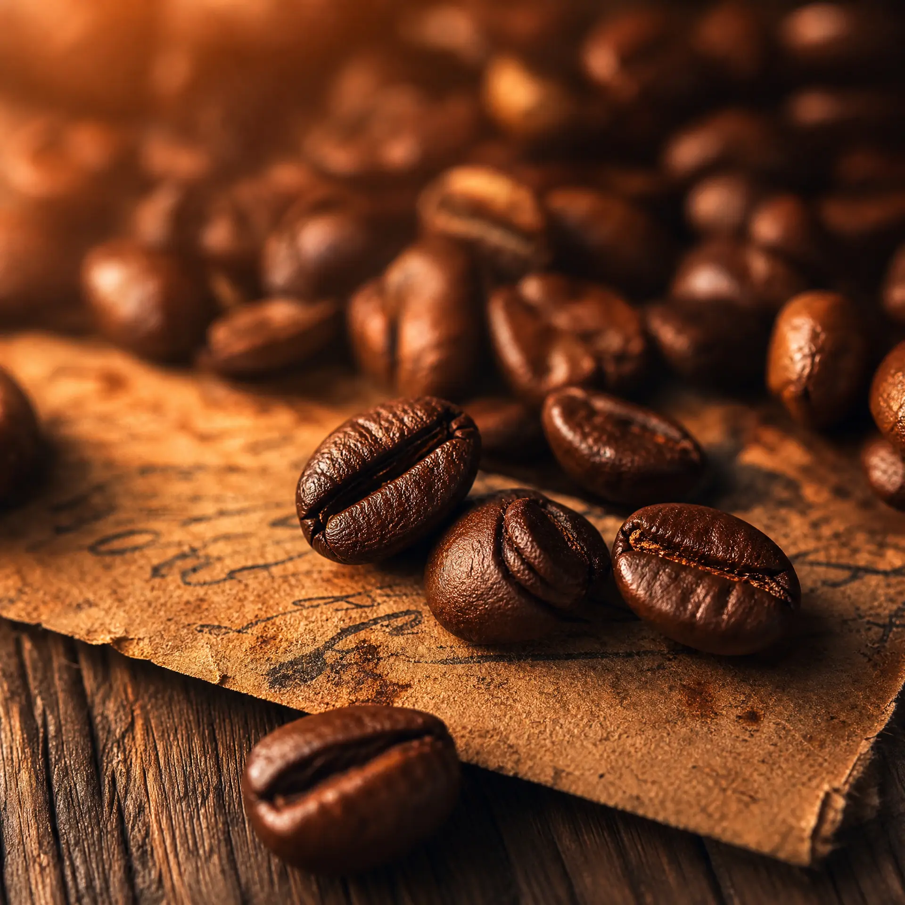

O aconchego da Bahia traduzido em um ritual diário
Café especial de alta doçura natural, acidez macia e torra artesanal
"Warmth in every pour, heritage in every bean."
FICHA TÉCNICA
Especialidade do Grão
-
ORIGEM
Chapada Diamantina, Bahia -
VARIEDADE
Catuaí Amarelo 2SL -
NOTAS SENSORIAIS
Rapadura, Doce de Leite, Amêndoas -
ACIDEZ
Macia -
MÉTODO RECOMENDADO
V60 e Coadores Manuais
-
ALTITUDE
1.200m -
PROCESSO
Natural (Secagem Lenta) -
TORRA
Artesanal (Média) -
CORPO
Médio -
DOÇURA
Alta

NOSSA HISTÓRIA
Sobre a Origem
O café nasce nas montanhas da Bahia, onde o clima tropical e o solo fértil criam as condições perfeitas para grãos de qualidade excepcional.
Cada grão é selecionado com cuidado, respeitando o tempo do café e a tradição do artesanato. Nosso compromisso é simples: entregar a sensação de um abraço quentinho a cada xícara.
Porque café não é apenas bebida. É ritual, é memória, é aconchego.
TÉCNICA ARTESANAL
O Ritual do Preparo
Guia V60 para extrair o melhor sabor
-
Moagem Média
Moa os grãos na hora do preparo para máxima frescor e aroma -
Água a 92°C
Temperatura ideal para extrair doçura sem amargura -
Extração Lenta
Despeje lentamente em movimentos circulares por 3-4 minutos
PROVA SOCIAL
O que Dizem Nossos Clientes
-
"A doçura natural é simplesmente incomparável. Cada xícara é um ritual que transforma meu dia."
Marina S.DOÇURA NATURAL
-
"O aroma que toma conta da casa é indescritível. Minha família toda quer tomar café agora!"
João P.AROMA ENVOLVENTE
-
"Entrega rápida e embalagem impecável. Voltei a comprar e já recomendei para amigos."
Ana L.ENTREGA RÁPIDA